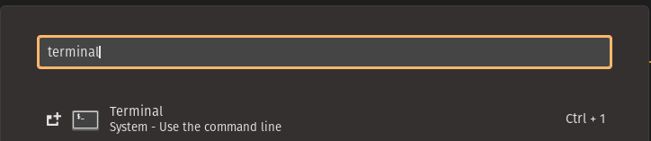
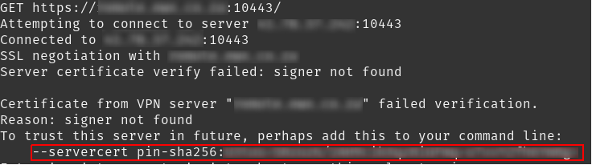
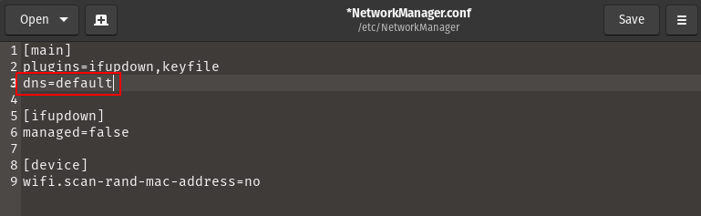
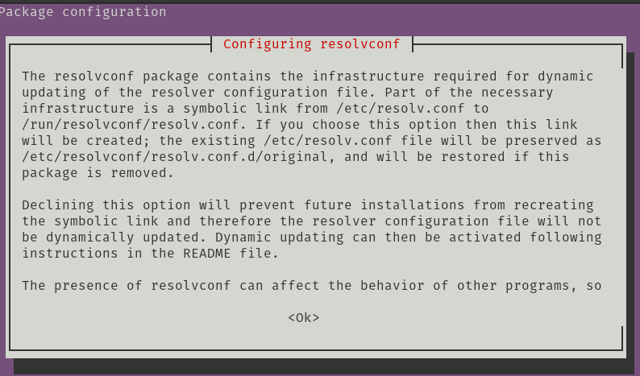
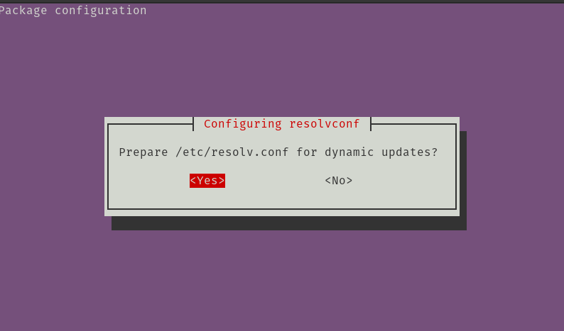
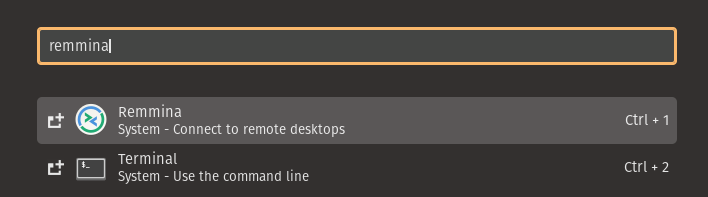
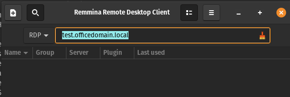

2022 12 10 popos vs vpn
Being able to securely connect to an office or client network is something a typical software developer or server administrator has to do daily. VPNs are usually rather complicated and seem to be more complicated on Linux than Windows. However, that might just be because I have used Windows for a longer time. In this guide, we'll be looking at working with VPNs and some annoying challenges along the way.
Introduction¶
Skill level required: Advanced
Working with VPNs on Pop!_OS and Linux, in general, has been my greatest challenge so far for adopting the Operating System for daily use. Getting VPNs working took a lot of reading and tinkering. Hopefully, this guide will help you get your VPN needs set up and running much quicker.
That being said, if you are not comfortable using the Terminal in Windows, I would recommend that you give this guide a skip.
We'll start off by installing an open-source VPN software called OpenConnect.
Installing OpenConnect¶
On Windows, you often need to install multiple VPN software. However, on Linux, there is one that works particularly well for several VPNs. Introducing OpenConnect.
OpenConnect understands the following VPN protocols and can connect to any of the below VPNs:
- Cisco AnyConnect SSL VPN
- Juniper Network Connect
- Palo Alto Networks (PAN) GlobalProtect SSL VPN
- Pulse Connect Secure SSL VPN
- F5 BIG-IP SSL VPN
- FortiGate SSL VPN
- Array Networks SSL VPN
This works perfectly for me as I typically use FortiGate and Cisco AnyConnect for 90% of the VPNs, I connect to.
To install it, just open the Terminal using the launcher or by pressing WINDOWS_KEY+T

sudo apt update
sudo apt install -y openconnectThe sudo command tells the terminal to run the rest of the command that follows as a full Administrator. APT stands for Advanced Package Tool and is often the simplest way of installing software on Debian-based distros like Pop!_OS.
Note that when you are prompted to fill in your password for your user, there is no indication that you are typing anything (i.e. there are no *s shown as you type your password). Once you enter the right password just press the Enter as usual and APT will install the software for you.
Using OpenConnect¶
If you wanted to connect to say a FortiGate vpn you will run a terminal command that looks something like this (remember to replace your-vpn-username and remote.officedomain.com with your information):
sudo openconnect \
--user=your-vpn-username \
--protocol=fortinet \
--server=remote.officedomain.com:10443When you try and connect you'll typically get an error that looks as follows: "Certificate from VPN server "x" failed verification." This is because 99% of VPN solutions seem to use self-signed certificates.

Fortunately, you can just copy the line indicated below and add that to the terminal command that you are using. E.g. the command that you would use for connecting to the vpn would look something like this in the end.
sudo openconnect \
--user=your-vpn-username \
--protocol=fortinet \
--server=remote.officedomain.com:10443 \
--servercert pin-sha256:a+b/c+dg=Next, you'll be prompted for your password and then potentially for your MFA token (if that is enabled).
If all goes well, you are now connected to your work VPN. And you are done? Well not quite, you see VPN software does not seem to play nicely with systemd-resolved.
Domain Name Resolution not working for VPN connections¶
Soon after connecting to the VPN, I discovered that I could not use the DNS name for any servers on my work network, however, the IP address would resolve. E.g. if I have a DNS name test.officedomain.local with IP address 192.168.3.200
If I ping test.officedomain.local (while on the VPN) I get Temporary failure in name resolution
ping test.officedomain.local
# ping: test.officedomain.local: Temporary failure in name resolutionHowever, I can ping the IP address, I can connect just perfectly. e.g.
ping 192.168.3.200
# 64 bytes from 192.168.3.200: icmp_seq=1 ttl=118 time=7.65 ms
# 64 bytes from 192.168.3.200: icmp_seq=2 ttl=118 time=5.13 msCulprit systemd-resolved¶
It looks like the VPN software does not play nicely with systemd-resolved. This service is a name resolution manager, that runs on many Linux distributions. It acts as a service for applications and resolves DNS queries. From what I have read, many Linux system admins are not that fond of it in the slightest.
Turning off systemd-resolved¶
WARNING!!! you can break your networking in your system if you get any of these steps wrong.
My resolution was to turn it off and switch back to using plain Network Manager (the the old way of networking in Linux).
First, we are going to edit the /etc/NetworkManager/NetworkManager.conf file and enable dns resolution for the old network manager.
sudo gedit /etc/NetworkManager/NetworkManager.confThen put the following line in the [main] section
dns=defaultYour file should look as follows, once you are happy with the file changes Save and close the file.

Now let us turn off the systemd-resolved service, fix the bad symbolic link for /etc/resolv.conf and restart the network manager.
sudo systemctl disable systemd-resolved
sudo systemctl stop systemd-resolved
sudo systemctl restart NetworkManagerNow we need to reconfigure the old resolveconf package.
sudo rm /etc/resolv.conf
sudo dpkg-reconfigure resolvconfOn this screen press TAB to highlight the OK button and press ENTER.

Now you'll get this screen, just hit ENTER again.

On this screen press TAB to highlight the OK button and press ENTER.
Reboot your machine.
Now when you connect to your VPN you should be able to use the domain name rather than the IP address because when your VPN software writes its entries into the /etc/resolv.conf file.
RDP with Remmina¶
Remmina is your Linux alternative to Windows Remote Desktop.
To install Remmina, you are just going to use the following Terminal command.
sudo apt update
sudo apt install -y remminaNow open Remmina from your application launcher.

Fill in the name of the server you want to RDP and press Enter.

Note that Remmina can also support the VNC and SSH protocols.
Conclusion¶
As you may have noticed working with VPNs in Pop!_OS is rather challenging. Fortunately, you can use one VPN application for connecting to virtually any VPN protocol.
What is Next¶
Now that we have VPNs and RDP working. The next issue I encountered was trying to copy files over my RDP sessions. I didn't come right with this, but found a work-around using the samba protocol. We'll be looking at this next.